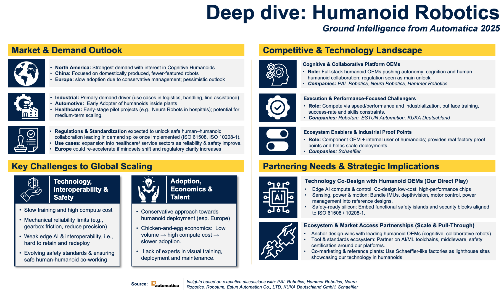

The strategic challenge
Humanoid robotics is growing fast, but entering a fast moving market the wrong way can waste years of effort and investment. The goal was to find the right position for the business before committing resources, using real conversations with the people building this market, not desk research alone.
Market and demand outlook
- North America. The strongest demand, with real interest in cognitive humanoids.
- China. Focused on domestically produced robots with fewer features.
- Europe. Slower adoption, due to conservative management and a cautious outlook.
- Industrial. The primary demand driver today, in use cases like logistics, material handling, and line assistance.
- Automotive. An early adopter of humanoids inside plants.
- Healthcare. Early stage pilot projects, such as Neura Robots in hospitals, with potential for scaling in the medium term.
Key challenges to global scaling
Regulation and standardization, once implemented, are expected to unlock safe human to humanoid collaboration and trigger a spike in demand. Relevant standards include ISO 61508 and ISO 10218 1. As reliability and safety improve, use cases are expected to expand into healthcare and other service sectors, and Europe could re-accelerate if mindsets shift and regulatory clarity increases.
Adoption is also held back by economics and talent. It is a chicken and egg problem: low volume leads to high compute cost, which leads to slower adoption. There is also a shortage of experts in visual training, deployment, and maintenance, along with slow training cycles and high compute cost.
On the technology side, mechanical reliability still has limits, for example gearbox friction reducing precision. Edge AI and interoperability remain weak, making it hard to retain and redeploy a trained system. Safety standards are still evolving, and ensuring safe human to humanoid collaboration remains an open problem.
Competitive and technology landscape
Cognitive and Collaborative Platform OEMs. Full stack humanoid makers pushing autonomy, cognition, and human to humanoid collaboration, who see regulation as the main unlock. Companies: PAL Robotics, Neura Robotics, Hammer Robotics.
Execution and Performance Focused Challengers. Compete on speed, performance, and industrialization, but face constraints in training, success rate, and skills. Companies: Robotum, ESTUN Automation, KUKA Deutschland.
Ecosystem Enablers and Industrial Proof Points. A component maker and internal user of humanoids that provides real factory proof points and helps scale deployments. Company: Schaeffler.
Partnering needs and strategic implications
Technology co-design with humanoid OEMs, the direct play. Co-design low cost, high performance chips for edge AI compute and control. Bundle IMUs, depth and vision sensing, motor control, and power management into ready to use reference designs. Embed functional safety islands and security blocks aligned to the relevant safety standards.
Ecosystem and market access partnerships, to scale and pull through. Anchor design wins with leading humanoid OEMs building cognitive, collaborative robots. Partner on AI and machine learning toolchains, middleware, and safety certification around the platforms. Use factories like Schaeffler's as lighthouse sites to showcase the technology inside real humanoids.
Result
This ground intelligence, gathered directly from executive discussions at Automatica 2025, shaped a clear strategic position as a silicon partner for humanoid robotics, laying the foundation for a potential multi million dollar revenue stream.
Insights based on executive discussions with PAL Robotics, Hammer Robotics, Neura Robotics, Robotum, ESTUN Automation Co Ltd, KUKA Deutschland GmbH, and Schaeffler.
Tools and way of working
Competencies applied
Landscape gallery

The European humanoid robotics landscape, mapped by country and by OEM, challenger, and ecosystem enabler.

The full deep dive distilled onto one page, market and demand outlook, key challenges to global scaling, the competitive landscape, and where the partnering opportunity actually sits.